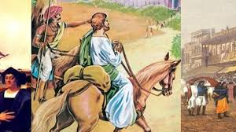

Explain Why People From All Over The World Visited Ancient India.🇮🇳
Motivations For Travel To India🛳;

1. Religion and Spirituality: India was a major part of spiritual and intellectual thought, with Hinduism, Buddhism, and Jainism attracting seekers from everywhere from the ancient world.
2. Trade and Finance: India's strategic location and abundant resources made it a hot spot for trade, with the Silk Road and other routes connecting it to the Mediterranean, China, and Southeast Asia.
3. Learning and Knowledge: Ancient India was known for scholarly community, such as Taxila and Nalanda, which attracted scholars and students from Greece, China, and many other Asian civilizations.
4. Cultural Exchange: India's rich cultural heritage, including its music, dance, art, and architecture, intrigued visitors from other lands, leading to exchanges of cultures and traditions
The Geographical features 🏔;
The Himalayas: While it's a barrier, the Himalayas also provided a route for trade and cultural exchange with Tibet, China, and Central Asia.
The Gangetic Plain: This fertile region, whose water was supplied by Ganges, Indus, and Brahmaputra rivers, supportes a dense population and enabled trade and cultural exchange.
- The Indian Ocean Trade Network: India's gigantic coastline and monsoon winds allowed trade with the Mediterranean, Africa, and Southeast Asia.
Key Routes 🛣;
The Silk Road: Connected India to China,Asia, and the Mediterranean.
The Indian Ocean Trade Network:It connected India to the Mediterranean, Africa, and Southeast Asia.
Taxila: A major area of learning and trade in ancient India.
Lothal: one of the main port cities in ancient India, facilitating maritime trade with the Mediterranean and Africa.